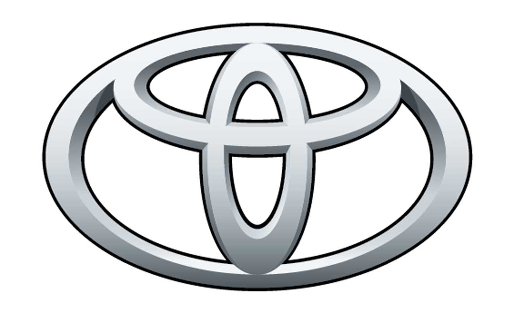

Toyota
Toyota es una de las marcas de automóviles más reconocidas a nivel mundial. Fundada en Japón, es conocida por su innovación, confiabilidad y compromiso con la sostenibilidad.
Mas Informacion Sobre Toyota
Volkswagen
Volkswagen, una marca alemana icónica, es conocida por su diseño elegante, tecnología avanzada y una rica historia en la industria automotriz.
Mas Informacion Sobre Volkswagen